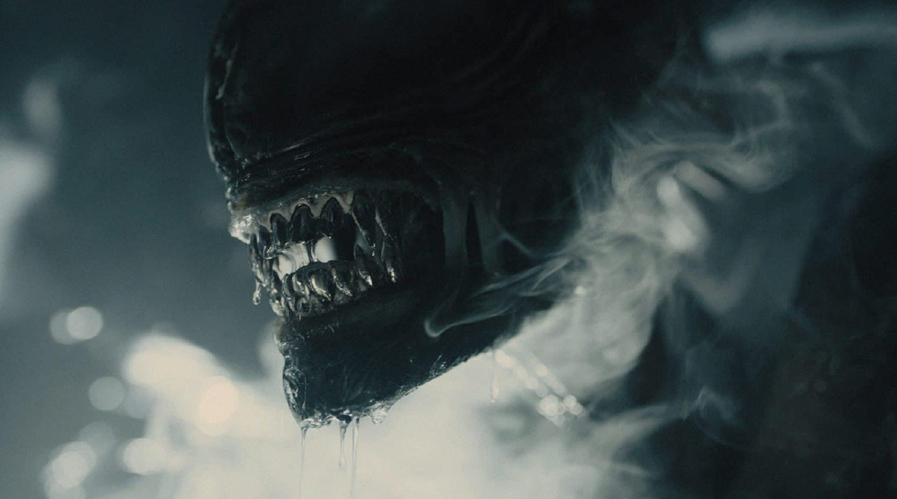
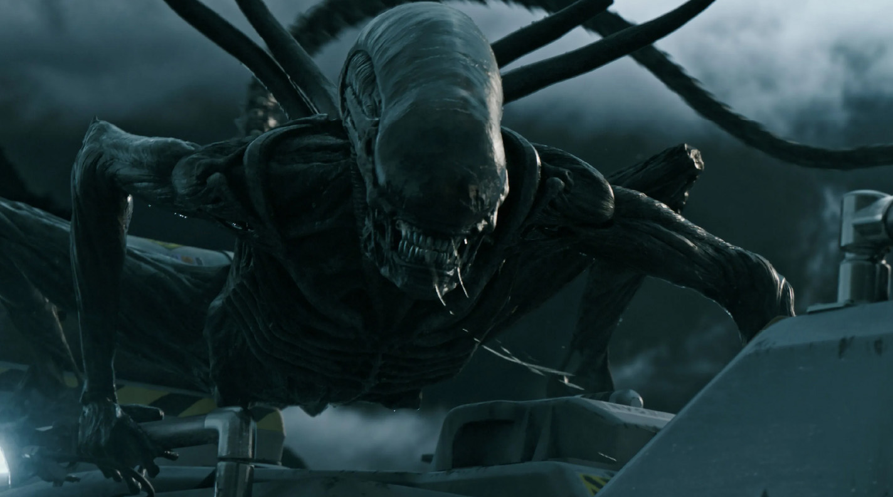
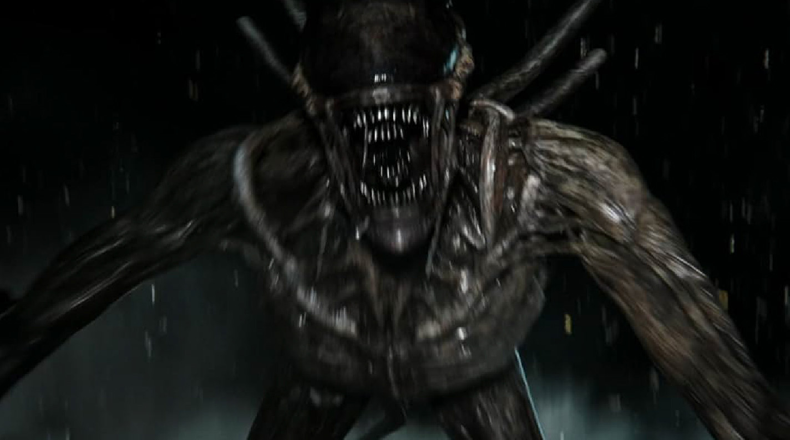
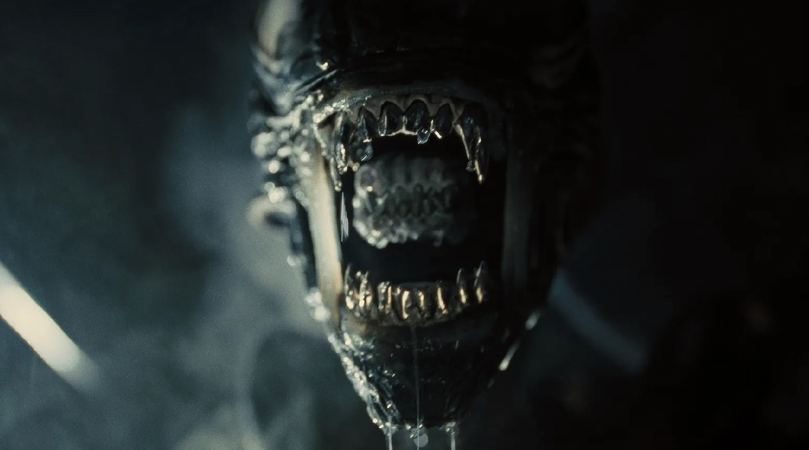
( ALIEN )
: 에일리언(alien [ˈeɪliən])은 주로 '외국인', '외계인', '이방인' 을
뜻하는 영어 단어이다.
GALLERY
 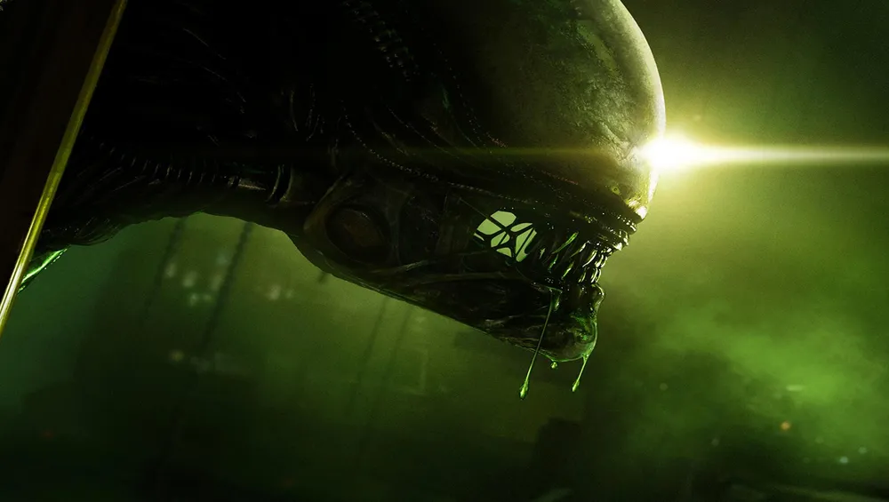
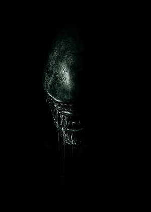
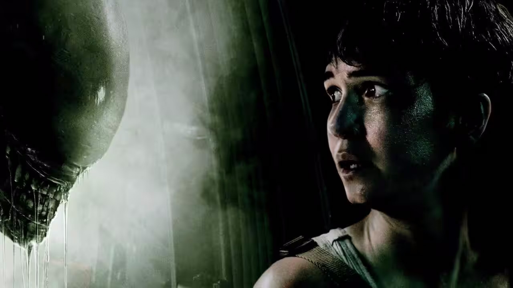
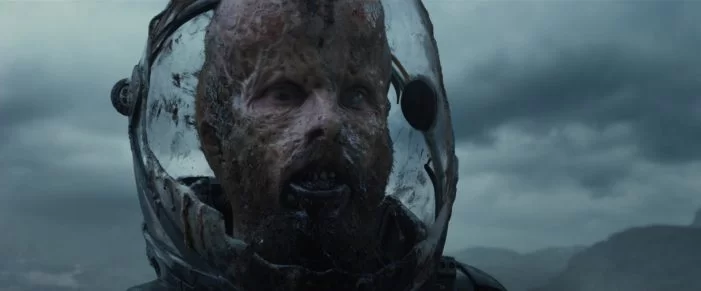
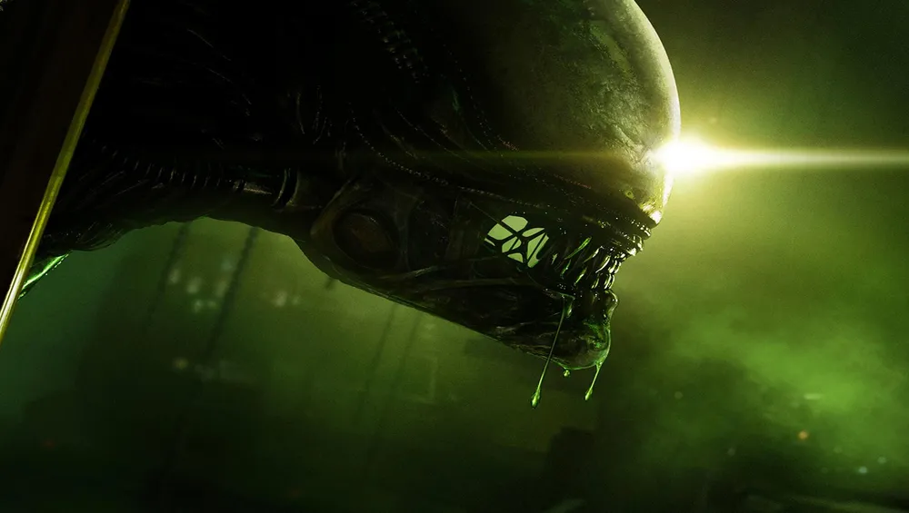
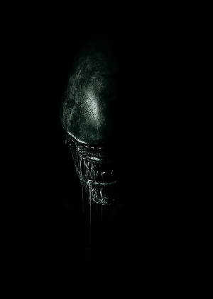
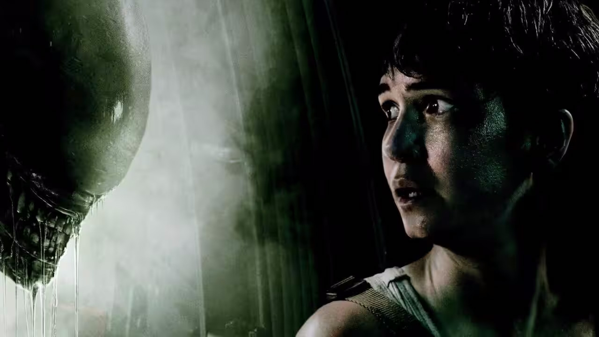
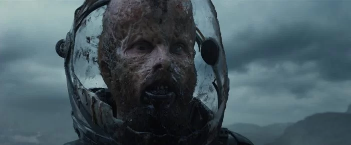
 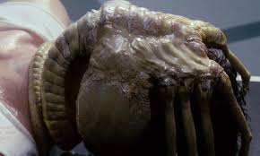
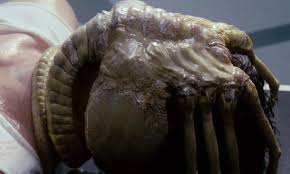
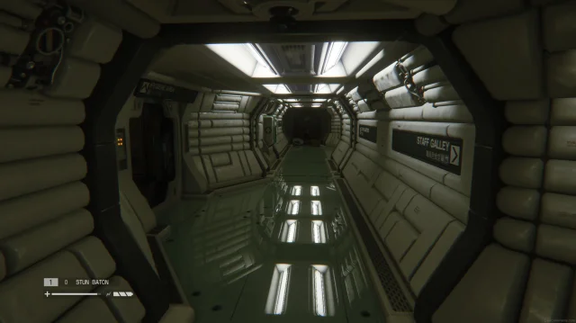
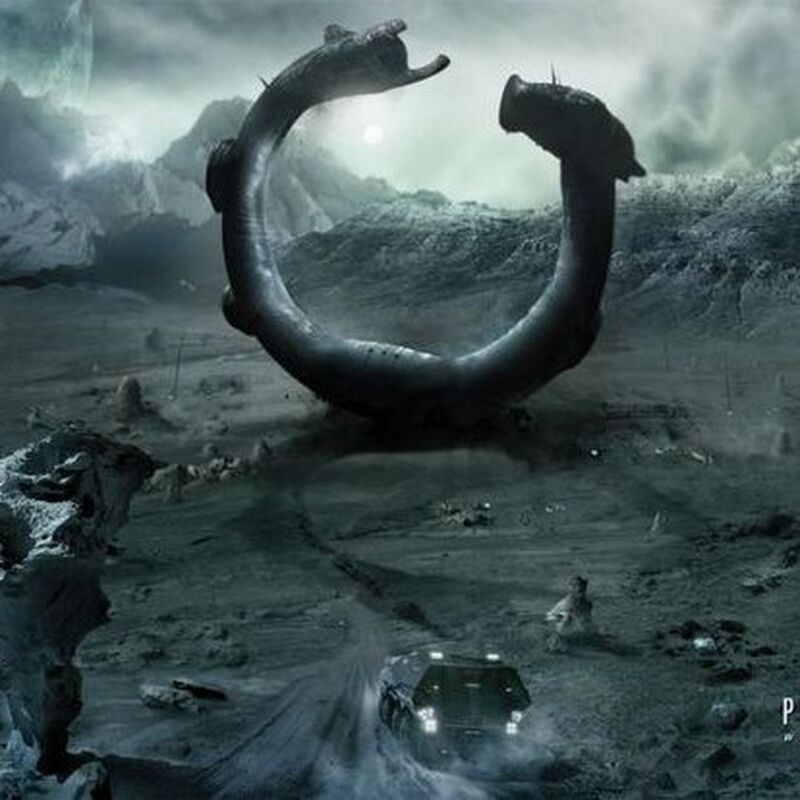
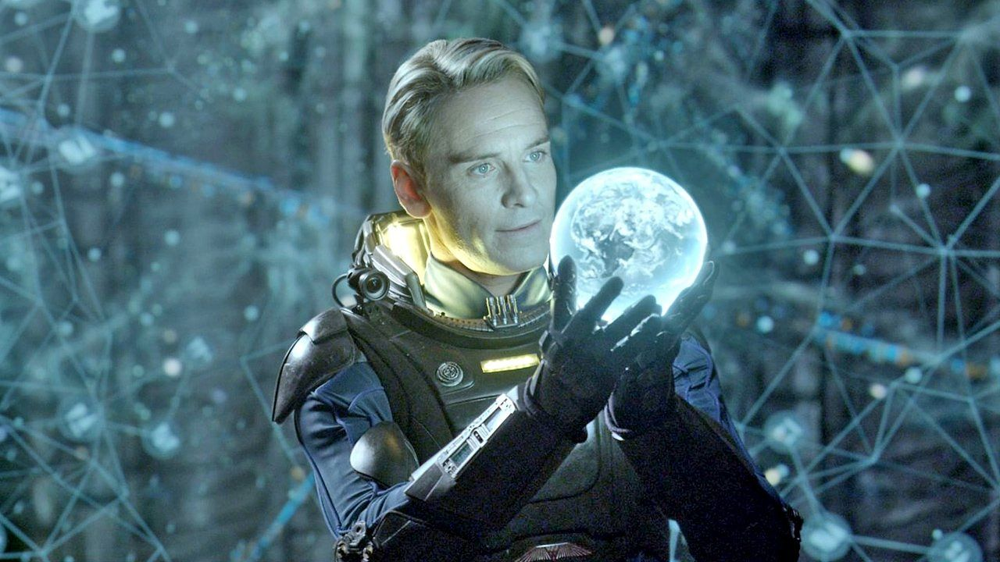
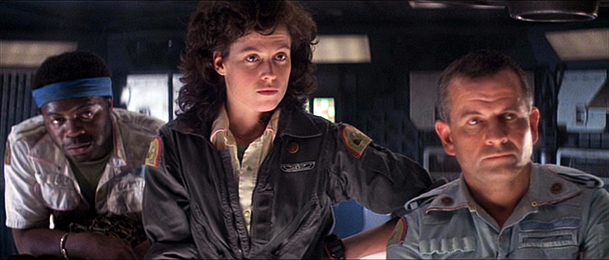
OVERVIEW
ALIEN시리즈의 시작
월터 힐이 제작을 맡고
리들리 스콧감독이 연출, 20세기 폭스 영국 런던
지사와 브랜디와인 미국 지사, 스콧 프리 프로덕션, 그리고 셰퍼턴
스튜디오가 제작한1979년영화
셰퍼턴 스튜디오가 제작한1979년영화 에이리언은 외계생물
에이리언과 인간의 혈투를 그린 괴물 호러 SF 영화 시리즈 셰퍼턴
스튜디오가 제작한1979년영화 이다.
미국 본사와 영국 지사를 둔20세기 스튜디오와 미국 본사를 둔
브랜디와인 프로덕션이 모든 영화 시리즈의 제작에 참여했지만,
20세기 스튜디오와 브랜디와인 프로덕션 뿐만 아니라 다양한
제작사들이 에이리언 시리즈 영화 제작에 참여했다.
에이리언4를 제외한 에이리언 시리즈 영화들의 경우,미국의 제작사와
영국의 제작사가 제작에 참여했다. 1979년부터 1997년까지 총 4편의
정식 시리즈가 제작되었으며, 그 중 첫번째 작품인 리들리 스콧의
에이리언(1979)은 영화 역사상 최고의 걸작 중하나로 꼽힌다
1976
대중들에게는 제임스 카메론이 감독한 2편
에이리언2(1986)가 가장 유명하고 인지도 및 흥행
수익도 높은데, 시리즈 중 가장 스케일이 큰 데다가 음산한 분위기와
액션 활극적 요소가 비교적 균형있게 어우러져 있기 때문으로
보인다. 에이리언 1편은 스페이스 호러 영화고 에이리언 2는
스페이스 액션 영화라 봐도 크게 무리가 없는 전혀 다른 장르의
영화다.
데이비드 핀처감독이 연출한 3편
에이리언3(1992) 에서는 1편에 가까우면서도 감독
특유의 어두운 모습을 보여줬는데, 명작인 두 전작들 만큼은
아니지만 당시 배우 연령과 스케줄 문제 등 여러 난제 속에서도
수작으로 완성해냈다는 평가를 받았다.
4편인 에이리언 4(1997)는
장피에르 죄네 감독이 연출했는데, 다소 무리한
설정으로 후속편을 냈으나 감독 특유의비쥬얼 연출로 3편보다 나은
평가를 받기도 했으며, 3, 4편 둘 다 나중 삭제 장면이 복원된 신규
감독판이 나온 이후 더 나은 재평가를 받기도 했다.
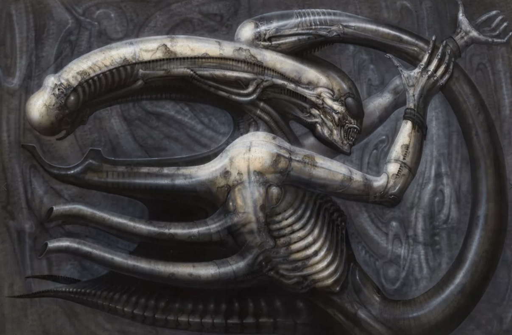
ALIEN디자인의 탄생배경
에일리언 디자인의 탄생배경 SF호러를 좋아하던 댄 오배넌은 영화를
제작하고자 20세기 FOX사에서 일하던 월터 힐과 계약을하고
스타워즈로 SF영화에도 전망이 있다는 점에 주목해 당시 신입
감독이었지만 가능성이 보이던 ‘리들리 스콧'을
감독으로 영입하게 된다. 그리고 리들리 스콧은 SF호러 장르에서
에이리언의 디자인을 고심하게 되는데 이때
‘한스 루돌프 기거’의 그로테스크하고 생물과 기계가
융합한 듯한 그림은 에일리언과 잘어울리는 느낌 그자체였고, 그중
머리가 길쭉한 “네크로노미콘4”라는 작품을 본 리들리
스콧 마음을 결정하게 되었다.
그렇게 에일리언 1은 1,100만 달러의 넉넉치 않은
제작비, 외계인 호러라는 특이한 장르모험과 같은 신예 감독과
무명에 가까웠던 주연배우까지 도박같은 요소들로 이루어졌지만
결과는
주연배우까지 도박같은 요소들로 이루어졌지만 결과는 제작비의
10배를 벌어들이며 후속편 제작이 진행 주연배우까지 도박같은
요소들로 이루어졌지만 결과는 되게 되었다.
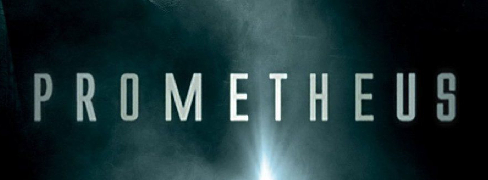
프리퀄 <프로메테우스> 와 그이후
1979년에 에이리언을 처음 세상에 내놓았던
리들리 스콧이 2012년, 다시 에이리언의 세계로
돌아왔다. 그는
다시 에이리언의 세계로 돌아왔다. 그는 에이리언(1979)의 30년
전의 시점을 다루는 프로메테우스를 감독 다시 에이리언의 세계로
돌아왔다. 그는 했다. 이 영화는 에이리언의 프리퀄격인 영화이긴 하지만,
에이리언보다는 스페이스 자키에 초점을 맞춘 영화이다.
프로메테우스에 이어서, 프로메테우스와 에이리언 사이의 사건을
다루는 에이리언: 커버넌트가 2017년 개봉했다.
프로메테우스는 당시 극장 관람객의 큰 호불호가 나타났지만,
에이리언 팬들은 프로메테우스를 해석하고 생각하며 열광 하였다.
에이리언: 커버넌트 개봉 당시 리들리 스콧 감독이 후속편 제작에
대한 의욕을 보였으나, 전작보다 낮은 흥행 성적과 폭스와 디즈니
합병 등 여러 악재가 겹치면서 후속편 제작은 흐지부지되면서
시리즈의 전망은 불투명해졌지만 이번
24년 8월 16일 새로운 시리즈로 공개될 계획으로
에이리언 팬들에게 반가운 소식으로 다가왔다.
MOVIE
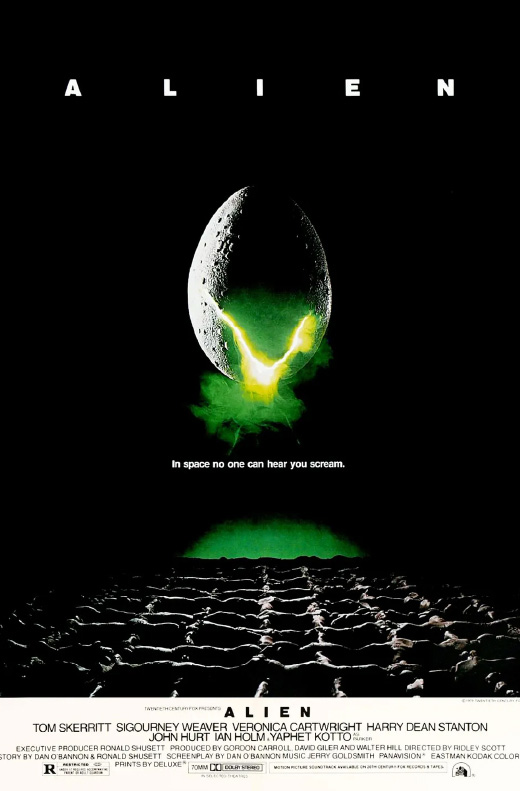
에일리언
ALIEN (1979)
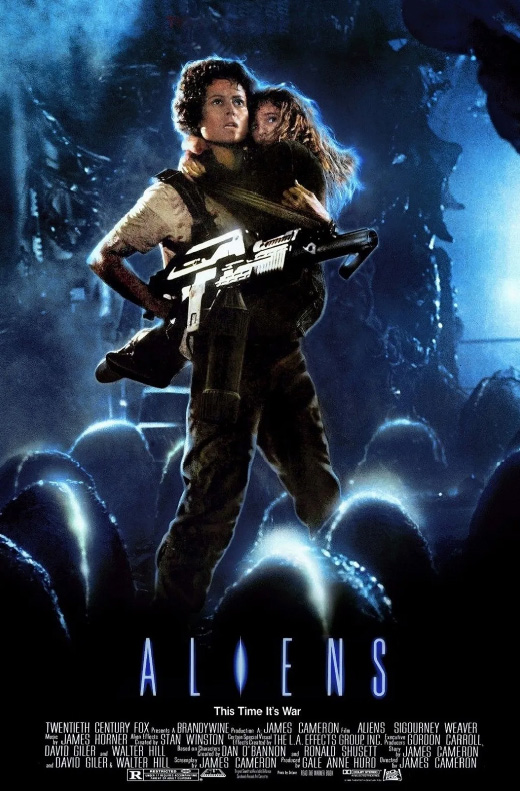
에일리언2
ALIEN (1986)

CARDS
OVOMORPH
오보모프
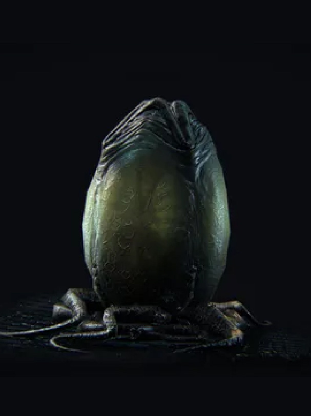
OVOMORPH
오보모프
에일리언 알은 대부분 퀸 에이리언이 낳는 에이리언들의
알이다.알이라 해도 흔히 연상되는 단단한 껍질로 된 알이 아니라
질기지만 말랑말랑한 가죽질로 된 알이다. 그리고 다른 알들과 달리
특이하게 입구가 이미 알 위에 마련되어있어서, 안쪽의 개체가 직접
찢고 나오는게 아니라 때가 되면 알아서 알가죽이 4갈래로 벌어진다.
알에서 에일리언이 직접 태어나는것이 아니며. 에일리언 알 안에는
유충 운반책인 페이스 허거가 들어있고, 이 페이스허거가 숙주에
넣은 유충이 에일리언으로 태어난다.페이스 허거는 보통 오보모프
하나 당 1마리씩 들어있지만 어떤 오보모프에는 최대 4마리까지
들어있는 경우도 있다